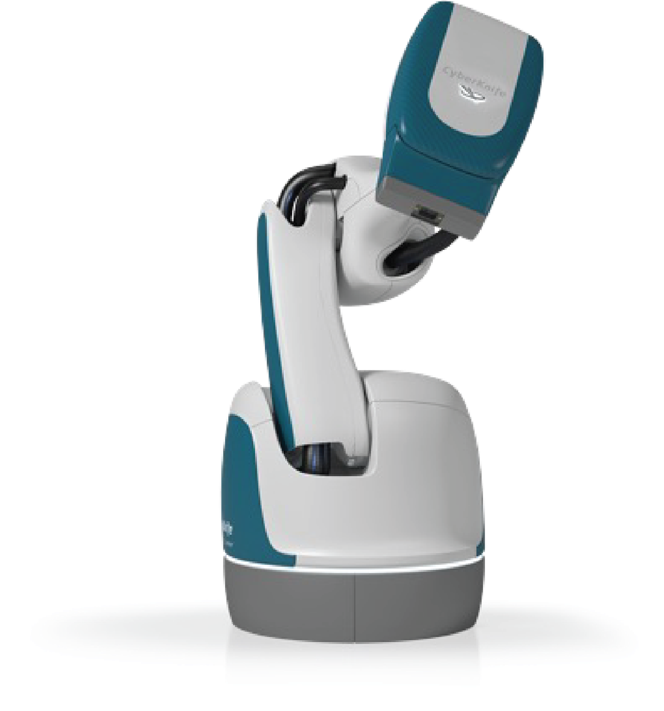
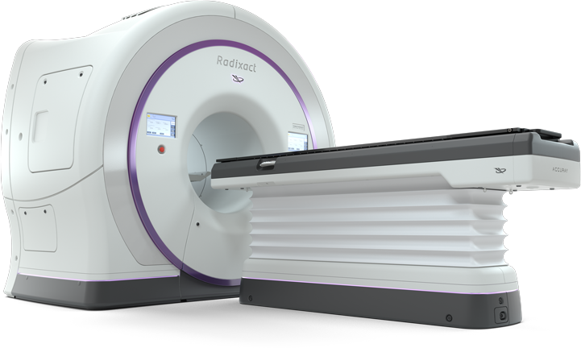

Stephen La Neve
President and Chief Executive Officer and a Class III director since October 20, 2025. Previously president of the Trauma and Joint Reconstruction business unit of Globus Medical, 2019 to 2024.
Accuray Incorporated · Nasdaq: ARAY
Accuray is a radiation therapy company that develops, manufactures, sells and supports treatment delivery, planning, imaging and data management solutions. Its CyberKnife platform delivers radiation from a robotic arm; its helical portfolio, which includes Radixact, delivers it from a rotating ring. In fiscal 2026, to June 30, 2026, revenue was $401.9 million, down 12%, and the net loss was $49.2 million.
Nasdaq told Accuray on February 2, 2026 that its stock had closed below the $1.00 minimum bid price for 30 consecutive business days. The stock moved to the Nasdaq Capital Market on August 6 with a second compliance period to February 2027. On October 6 stockholders approved a reverse split of 1-for-15 to 1-for-40 and the share issuance and authorized-share increase that the TCW financing needs. The board had not yet set the ratio or the timing, and the filings through October 16 do not report the closing or the ratio.
At June 30, 2026 the company was not in compliance with a minimum liquidity covenant in its credit agreement; its lenders waived it on July 29. Read the details 8-K, Oct 6 Proxy, Oct 16 10-K


From the 10-K filed August 27, 2026, in US dollars as filed. Fiscal 2025 is the year to June 30, 2025.
Down 12.3% from $458.5 million. Products fell 27% to $172.7 million; services rose 4% to $229.2 million, 57% of revenue.
Products
Services
Bars share one scale, 0 to $458.5 million. The percentage changes are computed on this page from the filed figures.
Down 27% from $427.0 million a year earlier. Gross orders were $191.9 million for the year against $288.0 million. Backlog is the company’s own measure and is not the same as remaining performance obligations.
Backlog at each quarter end, September 30, 2024 to June 30, 2026; the lighter bars are fiscal 2025.
Cash and cash equivalents at June 30, 2026 against $182.0 million of debt principal, including $10.3 million of accrued paid-in-kind interest. The carrying value net of costs and the warrant discount is $147.9 million.
After $32.9 million of interest expense and $16.2 million of restructuring. Loss from operations was $26.4 million. The company’s non-GAAP Adjusted EBITDA was $10.6 million.
Stockholders approved the three proposals the TCW financing needs: a share issuance under Nasdaq Rule 5635, an increase in authorized shares to 400 million and a reverse split of 1-for-15 to 1-for-40. The filings through October 16 do not report the closing or the split ratio.
“While product demand in certain regions remained impacted by geopolitical developments and tariff uncertainty, we continued to expand service revenue, improve operating efficiency, and execute our transformation initiatives ahead of expectations.”Ali Pervaiz, chief financial officer, fiscal 2026 results release, August 19, 2026
New management, a cut workforce, a restated footnote, a withdrawn forecast, a preferred stock sale agreed but not closed and a stockholder vote, each from a filing. 809 employees at June 30, 2026, 392 of them outside the United States.
A senior secured credit agreement with TCW Asset Management as agent: a $150 million term loan, a $20 million delayed draw facility and a $20 million revolver, maturing June 6, 2030, with warrants to the lenders. In June 2025 about $82.0 million of the 3.75% convertible notes had been exchanged for $68.5 million of cash and 8,881,579 shares.
Suzanne Winter resigned as chief executive and director on October 19; the Board appointed Stephen La Neve president, chief executive and a Class III director on October 20. A consulting agreement with Dedication Capital, an affiliate of director Steven F. Mayer, made Mr. Mayer the Transformation Board Sponsor for one year.
Revenue of $93.9 million. The company reaffirmed fiscal 2026 guidance of $471 million to $485 million of revenue and $31 million to $35 million of Adjusted EBITDA.
The company eliminated about 15% of its global workforce, estimating about $11 million of restructuring charges, and amended the Financing Agreement twice, as Amendment No. 1 on December 12 and No. 2 on December 15, issuing more warrants to the lenders.
The stock had closed below $1.00 for 30 consecutive business days. The 8-K filed February 6 cites Listing Rule 5550(a)(2); the 10-K and the August 24 proxy cite Rule 5450(a)(1), which they tie to the Global Select Market where the stock was then listed, and the proxy says the same requirement applies to both markets. The first compliance period ran to August 3, 2026.
Fiscal 2026 guidance was lowered to $440 million to $450 million of revenue and $22 million to $25 million of Adjusted EBITDA.
The Audit Committee concluded that the audited fiscal 2025 financial statements, the fiscal 2025 10-Qs and the September 2025 10-Q, and the auditor’s report on the fiscal 2025 statements, could not be relied on because of errors in the remaining performance obligations footnote. The 8-K said the errors were expected to have no impact on the balance sheets, income statements or cash flows. It reported two material weaknesses. The 10-K/A and 10-Q/A filed February 17 restated the statements, and the 10-K/A says the errors did not affect them.
The chief commercial officer left on March 31 and Paul Miele took the role on April 6. The chief operations officer left on April 26. On April 1 the Dedication Capital consulting fees were cut by half and its equity vesting terms were changed.
Accuray sold its claims for refunds of tariffs imposed under the IEEPA, $9.3 million including interest, to a third party for $6.6 million. The 10-K says the transaction did not qualify as a sale for accounting purposes, so the $6.6 million is recorded as a liability, with $2.4 million of financing costs in the fourth quarter.
The company withdrew its fiscal 2026 guidance, citing geopolitical uncertainty in the Middle East that it said continued to affect product shipments and service revenue.
The company drew $18.25 million under the delayed draw facility in May and issued more warrants. The remaining $18.0 million of 3.75% convertible notes was repaid at maturity on June 1.
The company was not in compliance with the minimum liquidity covenant in its credit agreement at June 30, 2026. The lenders waived the default on July 29.
55,000 shares of Series A convertible preferred stock for $55.0 million, $15.0 million paid in cash on signing and $40.0 million of debt to be exchanged at closing; Amendment No. 3 to the credit agreement with a covenant holiday to December 31, 2027; about 27.6 million existing warrants cancelled at closing and about 15.3 million new penny warrants issued; the Board cut to seven with two TCW designees.
Approved on August 4 and effective August 6, with a second 180-day period to regain the $1.00 bid price. The 8-K filed August 6 and the August 24 proxy say until February 1, 2027; the 10-K says until February 2, 2027.
Revenue of $401.9 million and a net loss of $49.2 million. The company gave no formal fiscal 2027 revenue or Adjusted EBITDA guidance, citing geopolitical developments, trade policy, tariffs and conditions in China and the Middle East.
All three proposals passed. The board had not set the reverse split ratio or its timing, and the filings through October 16 do not report the closing of the preferred stock sale.
Mika Nishimura, a Class II director and chair of the Compensation Committee, told the Board on October 8 that she will not stand for re-election, and her term ends at the annual meeting. The October 16 proxy statement calls that meeting for November 19, 2026, with one Class II nominee, Richard A. Meier, who joined the Board in October.
From Item 1 of the 10-K. Product pictures are the company’s own renders from accuray.com; descriptions of performance are the company’s.
The Accuray Precision Treatment Planning System with VOLO Optimizer runs on the CyberKnife S7; VOLO Ultra is the optimization engine for the helical systems; PreciseART trends dose automatically on Radixact and Stellar. The company estimates the VOLO software plans up to 90% faster and delivers up to 50% faster than before it.
Service revenue in fiscal 2026, up 4% and 57% of net revenue. The company attributes the rise to a larger installed base, higher renewal rates from pricing initiatives and more out-of-contract billings.
“New product sales in this competitive market are primarily dominated by two companies: Varian Medical Systems, Inc, a Siemens Healthineers company (‘Varian’) and Elekta AB (‘Elekta’).” Others the 10-K names include RefleXion Medical, ZAP Surgical Systems and United Imaging Healthcare.
Both drawings are schematics made for this page, not the company’s images and not to scale. The robotic drawing shows one isocentric case; the 10-K says the platform delivers isocentric or non-isocentric beams. The words under them are from the 10-K.
The arm moves; the target stays
“The CyberKnife platform features a compact linear accelerator mounted on a highly maneuverable robotic arm that moves around the patient while delivering isocentric or non-isocentric, non-coplanar radiation beams from a wide range of angles.”
The source circles; the table moves
“Helical radiation therapy integrates linear accelerator and CT imaging technology to deliver radiation from multiple 360-degree rotations around the patient while the patient table moves through the center of the system.”
“Accuray’s proprietary, internally developed real-time motion tracking technology remains a key differentiator, enabling clinicians to accurately track tumor motion during treatment.”
The company describes ClearRT helical kVCT imaging as designed to give high-quality visualization for treatment planning, patient positioning and adaptive workflows, and says it is rolling these capabilities out across its installed base.
The company says ongoing enhancements and engineering partnerships are focused on improving treatment planning speed, precision and usability. This page cannot verify clinical performance claims.
The fall in fiscal 2026 revenue was a product story. The 10-K ties it to fewer system shipments in China; this page’s own arithmetic, below, shows that sales to the company’s joint venture there account for most of the product decline.
$ millions; both bars share one scale, 0 to $470 million. Gross orders for fiscal 2026 were $191.9 million; after $128.8 million of age-outs (orders removed after 30 months without revenue) and $10.2 million of cancellations, plus $6.5 million of age-ins and $1.2 million of currency and other adjustments, net orders were $58.2 million. The book-to-bill ratio was 1.1, and 0.9 in the fourth quarter.
$ millions, by customer shipping location; bars share one scale, 0 to $160 million. China fell 45% to $68.1 million, $56.3 million of the $56.6 million total decline. The $56.3 million is this page’s subtraction of the filed China figures, $124,475 thousand less $68,142 thousand.
Net revenue, $ millions (axis 380 to 500)
Adjusted EBITDA, $ millions (axis 0 to 40)
The company gave no formal fiscal 2027 revenue or Adjusted EBITDA guidance on August 19, 2026. Adjusted EBITDA is the company’s non-GAAP measure.
Accuray owns 49% of CNNC Accuray (Tianjin), accounted for by the equity method, and sells it systems and services. Those sales were 26% of fiscal 2025 revenue and 16% of fiscal 2026. Product sales to the venture fell $58.6 million, 90% of the $64.9 million fall in total product revenue. Receivables from the venture were $9.9 million at June 30, 2026 against $28.5 million a year earlier.
The 10-K says the company expects sales to China “will be adversely impacted” and its results “may be adversely impacted through fiscal year 2027.”
Open system and upgrade orders are left out of the second figure because their deposits are not substantive termination penalties. In February 2026 the company told investors that its earlier remaining performance obligations disclosures had included them, and that those disclosures could no longer be relied on (see Obligations, D).
US dollars as filed. The 17-year revenue series in the SEC data spans two XBRL revenue tags, so only fiscal 2021 to 2026, all on the current tag, is shown.
Years end June 30. Net revenue bars share one scale, 0 to $470 million. Every year shown is a net loss.
Up from $13.0 million. Amortization is of debt financing costs and the discount for warrants issued to the lenders. Interest was larger than the $26.4 million loss from operations, a comparison of two filed figures made on this page. The credit agreement allows interest to be paid in kind, which adds to principal.
$ millions; bars share one scale. Gross margin was 27.7%, against 32.1% in fiscal 2025; the company attributes the fall to non-IEEPA tariff expense and an unfavorable product and region mix, notably far fewer CyberKnife shipments to China.
| Item | FY2026 |
|---|---|
| GAAP net loss | -49,194 |
| Depreciation and amortization | 7,942 |
| Stock-based compensation | 6,455 |
| Interest expense, net of interest income | 32,086 |
| Provision for income taxes | 1,946 |
| Gain from change in fair value of warrant liability | -8,369 |
| IEEPA refund financing costs | 2,405 |
| Restructuring charges | 16,172 |
| Post financing costs | 1,152 |
| Adjusted EBITDA | 10,595 |
A non-GAAP measure defined by the company; the items foot to the total. Restructuring and interest are the two largest adjustments, by this page’s comparison of the rows.
| Item | Jun 30, 2025 | Jun 30, 2026 |
|---|---|---|
| Term loan facility | 150,000 | 148,400 |
| Revolving credit facility | none | 5,000 |
| Delayed draw facility | none | 18,250 |
| 3.75% convertible notes | 18,000 | none |
| Accumulated paid-in-kind interest | 616 | 10,320 |
| Total debt | 168,616 | 181,970 |
| Unamortized financing costs | -11,101 | -11,656 |
| Unamortized warrant discount | -20,995 | -22,444 |
| Total debt, net | 136,520 | 147,870 |
Scheduled principal and interest on the term loan and delayed draw facility: $17.1 million in fiscal 2027, $25.2 million in 2028, $24.9 million in 2029 and $209.7 million in 2030, $276.9 million in all.
| US$ thousands | FY2025 | FY2026 |
|---|---|---|
| Products | 237,580 | 172,712 |
| Services | 220,925 | 229,235 |
| Total net revenue | 458,505 | 401,947 |
| Cost of products | 162,569 | 132,297 |
| Cost of services | 148,969 | 158,196 |
| Gross profit | 146,967 | 111,454 |
| Research and development | 47,942 | 37,753 |
| Selling and marketing | 43,315 | 38,573 |
| General and administrative | 47,871 | 45,398 |
| Restructuring | none | 16,172 |
| Income (loss) from operations | 7,839 | -26,442 |
| Income from equity method investment | 4,714 | 1,124 |
| Interest expense | -12,954 | -32,905 |
| Gain on extinguishment of debt | 1,475 | none |
| IEEPA refund financing costs | none | -2,405 |
| Gain (loss) from change in fair value of warrant liability | -499 | 8,369 |
| Other income, net | 559 | 5,011 |
| Income (loss) before income taxes | 1,134 | -47,248 |
| Provision for income taxes | 2,725 | 1,946 |
| Net loss | -1,591 | -49,194 |
Net loss per share was $0.02 in fiscal 2025 and $0.40 in fiscal 2026, on 102.8 million and 122.6 million weighted shares. Filed10-K
| US$ thousands | Jun 30, 2025 | Jun 30, 2026 |
|---|---|---|
| Cash and cash equivalents | 57,416 | 40,623 |
| Restricted cash, current | 574 | 611 |
| Accounts receivable, net | 83,192 | 67,409 |
| Inventories | 141,020 | 147,075 |
| Prepaid expenses and other current assets | 33,501 | 31,783 |
| Deferred cost of revenue | 1,762 | 276 |
| Total current assets | 317,465 | 287,777 |
| Property and equipment, net | 28,658 | 27,316 |
| Investment in joint venture | 4,612 | 5,024 |
| Operating lease right-of-use assets, net | 33,115 | 27,512 |
| Goodwill | 57,802 | 57,911 |
| Restricted cash, non-current | 4,144 | 7,533 |
| Other assets | 24,443 | 30,603 |
| Total assets | 470,239 | 443,676 |
| Accounts payable | 34,033 | 40,554 |
| Accrued compensation | 14,573 | 15,666 |
| Operating lease liabilities, current | 7,375 | 8,236 |
| Other accrued liabilities | 29,361 | 32,235 |
| Customer advances | 12,197 | 10,401 |
| Deferred revenue, current | 82,306 | 82,813 |
| Short-term debt, net | 12,734 | 1,500 |
| Total current liabilities | 192,579 | 191,405 |
| Operating lease liabilities, non-current | 32,482 | 27,768 |
| Long-term other liabilities | 5,160 | 5,477 |
| Warrant liability | 8,497 | 2,427 |
| Deferred revenue, non-current | 26,566 | 28,530 |
| Long-term debt, net | 123,786 | 146,370 |
| Total liabilities | 389,070 | 401,977 |
| Common stock | 113 | 119 |
| Additional paid-in capital | 602,165 | 613,559 |
| Accumulated other comprehensive loss | -1,837 | -3,513 |
| Accumulated deficit | -519,272 | -568,466 |
| Total stockholders’ equity | 81,169 | 41,699 |
Inventories of $147.1 million were the largest current asset, ahead of receivables of $67.4 million. Deferred revenue was $111.3 million, the sum of $82.8 million current and $28.5 million non-current. ComputedFiled10-K, balance sheet
| US$ thousands | FY2025 | FY2026 |
|---|---|---|
| Net cash from (used in) operating activities | 2,860 | -6,981 |
| Net cash used in investing activities | -8,523 | -12,279 |
| Net cash from (used in) financing activities | -4,252 | 6,977 |
| Effect of exchange rate changes | 1,657 | -1,084 |
| Net decrease in cash, cash equivalents and restricted cash | -8,258 | -13,367 |
What the filings say the company could lose or may have to pay, in the order a reader should check them. Dates and amounts are as filed; quotations are exact.
Bid price, Capital Market, reverse split
“If we do not regain compliance with or continue to satisfy Nasdaq’s continued listing standards and other Nasdaq rules, our common stock could be delisted, which would harm our business, the trading price of our common stock, our ability to raise additional capital and the liquidity of the market for our common stock.”10-K, Item 1A
Series A preferred, warrants, board seats
TCW Asset Management is the agent and a lender under the credit agreement, and the company calls it its “primary lender and largest shareholder.” The August 24 proxy shows TCW beneficially owning 27,527,916 shares, 18.7%, all of them shares under warrants; the October 16 proxy shows the same shares as 23.0% (see Leadership and holders). The preferred stock is sold to certain existing investors under the credit agreement, and the proxy calls TCW an affiliate of the lead investor.
| Term | What the filing says |
|---|---|
| Series A preferred | 55,000 shares at $1,000, for $55.0 million: $15.0 million in cash, paid July 29, and $40.0 million of term loan debt to be cancelled in exchange at closing |
| Dividend and rank | 8% a year, accruing; senior to the common stock on dividends and on liquidation |
| Conversion | 2,000 common shares per $1,000, about $0.50 a share, adjusted for the reverse split; the company must reserve 110,000,000 shares for it |
| Votes and consents | The preferred does not vote with the common stock on an as-converted basis; its holders hold consent rights, and TCW may designate two of the seven directors |
| Warrants | About 27.6 million existing warrants, at $1.25 to $1.68, are cancelled at closing; about 15.3 million new warrants at $0.01 a share, good for seven years, were issued on signing |
| Closing conditions | Include stockholder approval, received October 6, and implementation of the reverse split, not yet reported through October 16 |
| If the purchase agreement is terminated | The $15.0 million cash investment is deemed an obligation under the credit agreement, and a $15.0 million fee is due, payable on the earliest of final maturity, payoff, acceleration or satisfaction of the obligations |
The 10-K says: “Consummation of the Financing Transaction and exercise of some or all of the July 2026 Warrants will result in significant dilution of stockholders’ ownership and voting interests in the Company.” The August 24 proxy puts conversion of the preferred alone at 110,000,000 shares, an increase of 92% on the 119,439,307 shares then outstanding. The sum above excludes accruing preferred dividends, employee awards and the premium warrants that are cancelled, and is before any reverse split.
ProposalForAgainstAbstain 1. Nasdaq share issuance (Rule 5635), including the Series A conversion and the warrants; the 8-K says it may be deemed a change of control and covers equity compensation to a directorBroker non-votes: 30,977,71444,411,4093,910,714188,917 2. Authorized shares from 200 million to 400 millionBroker non-votes: 30,977,71444,625,0283,699,084186,928 3. Reverse split, 1-for-15 to 1-for-40Broker non-votes: 074,331,1474,664,788492,819 |
The September 18 supplemental proxy says the Board will not effect the reverse split without the corresponding decrease in authorized shares, and that the total authorized will be proportionately reduced by the ratio. The August 24 proxy warns that Nasdaq keeps broad discretion to delist a company even after stockholder approval.
TCW, secured on substantially all assets
| Term loan | 148,400 |
|---|---|
| Revolving credit facility | 5,000 |
| Delayed draw facility, drawn May 2026 | 18,250 |
| Accumulated paid-in-kind interest | 10,320 |
| Total debt | 181,970 |
Interest is term SOFR with a 2.00% floor plus 8.50%, or a base rate plus 7.50%, with an option to pay up to 6.00% in kind. The facilities mature June 6, 2030. Scheduled principal and interest is $209.7 million in fiscal 2030.
At June 30, 2026 the company “was not in compliance with the minimum liquidity covenant.” On July 29 the lenders waived the default. Amendment No. 3 also gives a covenant holiday through December 31, 2027 for the total leverage and fixed charge coverage ratios, with, the company says, the first test as of March 31, 2028, changes the minimum liquidity requirement, raises certain prepayment fees, adds a $5.0 million delayed draw commitment and turns the revolver into an asset-based facility. The company agreed to pay $250,000 of amendment fees. The 10-K says a change of control is an event of default under the credit facilities, and that the weighted average effective interest rate on the term loan was 24.8% in fiscal 2026, against 22.0% in fiscal 2025.
“We have substantial indebtedness in the form of a credit facility and may incur other debt in the future, which may adversely affect our financial condition and future financial results. In the past, we have not been in compliance with certain financial covenants relating to our indebtedness and have been required to obtain waivers to avoid defaulting under such indebtedness.”10-K, Item 1A
The 10-K adds: “Substantially all of our assets secure the Credit Facilities. In the event of a default, the lenders would have the right to foreclose on those assets, which could severely impair or eliminate our ability to continue operating.”
Item 4.02, February 2026
On February 8, 2026 the Audit Committee concluded that the audited fiscal 2025 financial statements, the fiscal 2025 10-Qs and the September 2025 10-Q, and the auditor’s report on the fiscal 2025 statements, should no longer be relied on, because open system and upgrade orders had been wrongly included in the remaining performance obligations footnote. The 8-K said the errors were expected to have no impact on the balance sheets, income statements or cash flows and were isolated to one footnote. The 10-K/A filed February 17 restated the fiscal 2025 statements and says the errors did not affect them; it cut gross remaining performance obligations at June 30, 2025 from $818.2 million to $60.9 million. The company reported that internal control over financial reporting was not effective at June 30, 2025.
At June 30, 2026 management again concluded that internal control over financial reporting was not effective. One material weakness, on the review of footnote schedules, was not remediated because the new controls had not operated long enough; the second, on the assessment made when ASC 606 was adopted, was remediated. Grant Thornton LLP audited the controls and expressed an adverse opinion on internal control over financial reporting at June 30, 2026.
The joint venture, Dedication Capital, TCW
Accuray sold its 49%-owned China joint venture $43.0 million of products and $22.6 million of services in fiscal 2026, $101.6 million and $18.5 million in fiscal 2025, and held a $9.9 million receivable from it at June 30, 2026.
Director Steven F. Mayer, one of TCW’s two designees, is also chief executive of Dedication Capital, which entered a one-year consulting agreement with the company on October 18, 2025 for his services as Transformation Board Sponsor. The agreement pays Dedication Capital a base fee of $600,000 a year and a cash incentive of up to $750,000, of which $375,000 is guaranteed, and grants Mr. Mayer 1.25 million restricted shares and 1.25 million performance-based shares. The April 1, 2026 amendment halved the base fee for March 31 to October 31, 2026 and the minimum incentive payments, and accelerated 0.9 million of the restricted shares. The proxy says Mr. Mayer is also a Senior Advisor to the private credit group of TCW, and that Mr. Galbato serves on a corporate advisory board at TCW and receives consulting compensation averaging less than $12,000 a month. TCW is the agent and a lender, a warrant holder with 18.7% beneficial ownership in the August 24 proxy (23.0% in the October 16 proxy), and from closing a holder of preferred stock with the right to designate two directors.
“We have entered into certain relationships with collaborators, partnerships, strategic alliances, joint venture partners and other third parties, which are outside of our full control and may harm our existing business if we fail to realize the expected benefits of such relationships.”10-K, Item 1A
Item 1A risk factors
“If the Financing Transaction is consummated, our stockholders will experience substantial dilution as a result of any conversion of the Series A Convertible Preferred Stock or the exercise of the July 2026 Warrants.”10-K, Item 1A
The same risk factor says TCW and its affiliates will have “significant influence” over matters requiring stockholder approval, including the election and removal of directors, and that their interests “may conflict with those of our other stockholders.”
“The exercise of outstanding warrants for our common stock would increase the number of shares eligible for future resale in the public market and result in dilution to our stockholders.”10-K, Item 1A
Names and titles are from the company’s filings; the monogram tiles are not photographs. Since October 2025 the chief executive, the chief commercial officer and the chief operations officer have changed, five directors have left and three have joined, and a sixth has said she will leave at the annual meeting on November 19, 2026.
President and Chief Executive Officer and a Class III director since October 20, 2025. Previously president of the Trauma and Joint Reconstruction business unit of Globus Medical, 2019 to 2024.
Senior Vice President and Chief Financial Officer.
Senior Vice President and Chief Commercial Officer since April 6, 2026.
Senior Vice President, Chief Legal Officer and Corporate Secretary.
Chairman of the Board.
Director; one of TCW’s two designees; Transformation Board Sponsor under a consulting agreement with Dedication Capital.
Director since the November 13, 2025 annual meeting; one of TCW’s two designees.
Director.
Director and chair of the Compensation Committee. Said on October 8 that she will not stand for re-election at the November 19, 2026 annual meeting, where her term ends.
Director since October 5, 2026, a Class II director on the Compensation Committee. Previously chief executive of TwinMed and of Rockley Photonics, and chief financial officer of IntersectENT and of Owens & Minor. Nominated for election at the November 19, 2026 annual meeting.
Who left: Suzanne Winter, chief executive, October 19, 2025; Robert C. Kill, director, whose term ended at the annual meeting of November 13, 2025; Byron C. Scott, director, retired December 31, 2025; Sandeep Chalke, chief commercial officer, March 31, 2026; Leonel Peralta, chief operations officer, April 26, 2026; Beverly Huss and Anne LeGrand, directors, July 29, 2026. Still to leave: Mika Nishimura, director, at the annual meeting of November 19, 2026. FiledProxy, Oct 1, 20258-K, Nov 198-K, Oct 208-K, Dec 318-K, Mar 198-K, Apr 288-K, Jul 298-K, Oct 68-K, Oct 13Proxy, Oct 16
| Holder | Shares | Percent |
|---|---|---|
| The TCW Group, Inc., on behalf of the TCW Business Unitall shares are subject to warrants: 18,942,059 per its Schedule 13D/A of May 19, 2026, plus 598,114 and 7,987,743 shares under penny warrants issued on July 29, 2026 | 27,527,916 | 18.7% |
| Steven F. Mayerdirector; a TCW designee | 1,211,956 | 1.0% |
| Suzanne Winterchief executive officer until October 19, 2025 | 1,200,047 | 1.0% |
| Joseph E. Whitterschairman of the Board | 667,656 | less than 1% |
| Ali Pervaizchief financial officer; includes 39,682 shares under options exercisable within 60 days | 351,020 | less than 1% |
| James M. Hindmandirector | 294,804 | less than 1% |
| Mika Nishimuradirector | 212,659 | less than 1% |
| Chan W. Galbatodirector; a TCW designee | 50,000 | less than 1% |
| Stephen La Nevepresident and chief executive officer | 20,000 | less than 1% |
| Paul Mielechief commercial officer | 0 | less than 1% |
| All current executive officers and directors as a group (8 persons)as the proxy states it; excludes Ms. Winter | 2,808,095 | 2.4% |
TCW’s 18.7% recomputes to 18.73% on a base of the shares outstanding plus its warrant shares. ComputedFiledProxy, Aug 24
| Holder | Shares | Percent |
|---|---|---|
| The TCW Group, Inc., on behalf of the TCW Business Unitall shares are under warrants, from a Schedule 13D/A reporting ownership at July 29, 2026 | 27,527,916 | 23.0% |
| All current executive officers, directors and director nominees as a group (9 persons)includes 1,402,164 shares under restricted stock units and awards vesting within 60 days and 39,682 under options | 4,221,155 | 3.5% |
The August 24 proxy shows the same 27,527,916 TCW shares as 18.7%; this proxy shows 23.0%, which is those shares over the shares outstanding alone (27,527,916 / 119,575,537 = 23.02%). The same proxy gives 119,555,592 shares outstanding at its October 8 record date. Holdings in this table count restricted stock units vesting within 60 days, so they are not comparable with the July 31 rows. ComputedFiledProxy, Oct 16
Annual, quarterly and current reports, their amendments and the proxy materials, back to the day the new chief executive was announced. Each link goes to the filing on SEC EDGAR; titles are this page’s plain-language summaries of each filing. Registration statements, ownership forms and insider filings are on EDGAR.
This page is not the company’s site and runs no email alerts of its own. The company’s investor site carries its releases, filings and shareholder services.